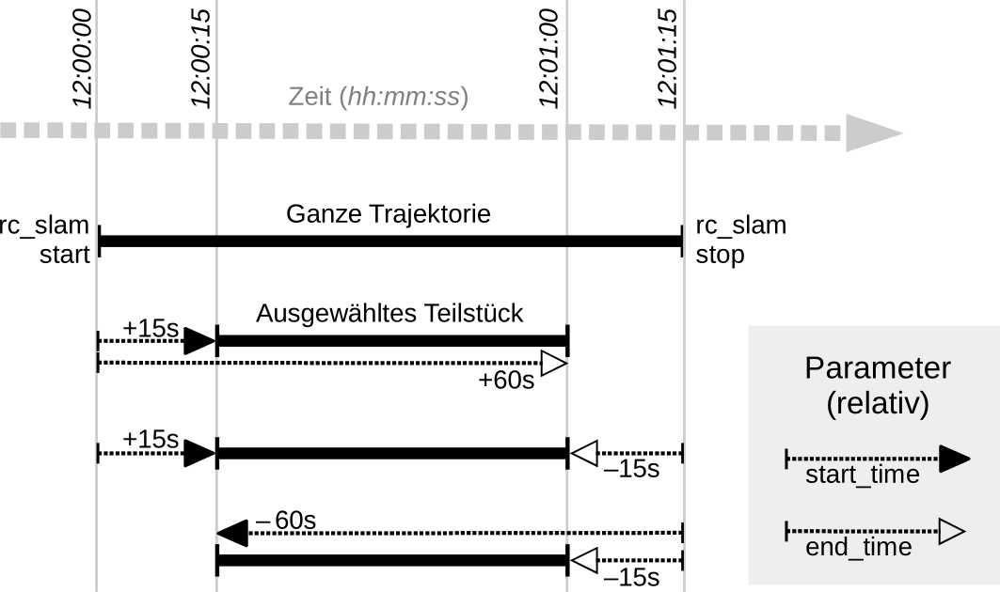

SLAM¶
Das SLAM-Modul ist Teil des Dynamik-Moduls und stellt genauere Posenschätzungen als das Stereo-INS-Modul bereit. Wenn sich der rc_visard bewegt, summieren sich mit der Zeit die bei der Posenschätzung auftretenden Fehler. Das SLAM-Modul kann diese Fehler korrigieren, indem es bereits besuchte Orte wiedererkennt.
Das Akronym SLAM steht für simultane Lokalisierung und Kartenerstellung (simultaneous localization and mapping). Das SLAM-Modul erstellt eine Karte aus den für die visuelle Odometrie genutzten Bildmerkmalen. Die Karte wird später verwendet, um kumulierte Posenfehler zu korrigieren. Am ehesten lässt sich dies in Anwendungen beobachten, bei denen der Roboter, nachdem er eine lange Strecke zurückgelegt hat, an einen besuchten Ort zurückkehrt (dies wird auch „Schleifenschluss“ oder „Loop Closure“ genannt). In diesem Fall kann der Roboter Bildmerkmale, die bereits in seiner Karte abgespeichert sind, wiedererkennen und seine Posenschätzung auf dieser Grundlage korrigieren.
Kommt es zu einem Schleifenschluss, wird nicht nur die aktuelle, sondern auch die bisherige Posenschätzung (Trajektorie des rc_visard) korrigiert. Die kontinuierliche Korrektur der Trajektorie sorgt dafür, dass die Karte immer mehr an Genauigkeit gewinnt. Die Genauigkeit der Trajektorie ist auch wichtig, wenn diese zum Aufbau eines integrierten Weltmodells verwendet wird, indem beispielsweise die ermittelten 3D-Punktwolken in ein gemeinsames Koordinatensystem projiziert werden (siehe Berechnung von Tiefenbildern und Punktwolken). Zu diesem Zweck kann die gesamte Trajektorie des rc_visard beim SLAM-Modul abgefragt werden.
Bemerkung
Das SLAM-Modul ist optional für den rc_visard erhältlich und läuft intern auf dem Sensor. Sobald eine SLAM-Lizenz auf dem rc_visard hinterlegt wird, erscheint das SLAM-Modul auf der Seite Überblick der Web GUI als Verfügbar und SLAM ist auf der Seite System im Bereich Lizenz aktiviert.
Verwendung¶
Das SLAM-Modul kann jederzeit entweder über das rc_dynamics Interface (siehe Dokumentation der zugehörigen Services) oder über die Dynamik-Seite der Web GUI eingeschaltet werden.
Die Posenschätzung des SLAM-Moduls wird durch die aktuelle Schätzung des Stereo-INS-Moduls initialisiert. Der Ursprung der Posenschätzung befindet sich also an dem Punkt, an dem das Stereo-INS-Modul gestartet wurde.
Da das SLAM-Modul auf den Bewegungsschätzungen der Stereo-INS aufbaut, wird das Stereo-INS-Modul automatisch gestartet, sobald SLAM gestartet wird, sollte es nicht bereits laufen.
Wenn das SLAM-Modul läuft, sind die korrigierten Posenschätzungen über die Datenströme pose, pose_rt, und dynamics des Sensordynamik-Moduls verfügbar.
Die komplette Trajektorie kann durch den get_trajectory Service abgefragt werden, siehe Services für weitere Details.
Um die Karte mit den Bildmerkmalen auf dem rc_visard zu speichern, bietet das SLAM-Modul den save_map Service an. Dieser kann nur während der Laufzeit (Zustand „RUNNING“) oder nach dem Stoppen (Zustand „HALTED“) verwendet werden.
Eine gespeicherte Karte kann vor dem Starten (Zustand „IDLE“) mit dem Service load_map geladen werden. Um vom Zustand „HALTED“ zurück zu Zustand „IDLE“ zu gelangen, kann der reset Service verwendet werden. Es ist zu beachten, dass eine falsche Lokalisierung an (visuell) ähnlichen Orten bei der initialen Lokalisierung in der bereits geladenen Karte leichter passieren kann als während des weiteren Betriebs. Das Auswählen eines Startpunkts mit eindeutiger visueller Erscheinung vermeidet dieses Problem. Das SLAM-Modul nimmt daher an, dass der rc_visard in der ungefähren Umgebung des Ursprungs der Karte gestartet wird, d.h. innerhalb weniger Meter. Der Ursprung der Karte befindet sich dort, wo das Stereo-INS-Modul gestartet wurde, als die Karte aufgezeichnet wurde.
Speicherbeschränkungen¶
Das SLAM-Modul muss, im Gegensatz zu anderen Softwaremodulen auf dem rc_visard, Daten über die Zeit akkumulieren, z.B. Bewegungsmessungen und Bildmerkmale. Weiterhin benötigt die Optimierung der Trajektorie beträchtliche Speichermengen, besonders wenn große Schleifen geschlossen werden müssen. Deswegen steigen die Speicheranforderungen des SLAM-Moduls mit der Zeit.
Durch die Speicherbeschränkungen der Hardware muss das SLAM-Modul seinen Speicherbedarf reduzieren, wenn es kontinuierlich läuft. Wenn der verfügbare Speicher knapp wird, fixiert das SLAM-Modul Teile seiner Trajektorie. Das heißt, diese Teile werden nicht weiter optimiert. Die letzten 10 Minuten der aktuellen Trajektorie sind von der Fixierung jedoch immer ausgenommen.
Wenn trotz der oben genannten Maßnahmen der Speicher knapp wird, stehen zwei Optionen zur Verfügung. Als erste Option kann das SLAM-Modul in den HALTED-Zustand gehen, in dem es keine weiteren Verarbeitungsschritte durchführt, aber die Trajektorie weiterhin verfügbar ist (bis zu dem Zeitpunkt, in dem das Modul in den HALTED-Zustand gewechselt ist). Dies ist das Standardverhalten.
Die zweite Option ist, dass das SLAM-Modul weiterläuft, bis der Speicher aufgebraucht ist. In diesem Fall wird das SLAM-Modul neu gestartet. Wenn der autorecovery Parameter auf true gesetzt ist, wird das SLAM-Modul seine letzte Position wieder herstellen und die Kartierung fortsetzen. Andernfalls wird das Modul in den FATAL-Zustand wechseln und muss über das rc_dynamics Interface neu gestartet werden (siehe Services).
Die Laufzeit bis zum Erreichen des Speicherlimits hängt stark von der Trajektorie des Sensors ab.
Warnung
Aufgrund des limitierten internen Speichers des rc_visard ist es nicht empfohlen, Stereo-Matching in voller Auflösung (Full) gleichzeitig mit dem SLAM-Modul laufen zu lassen. Durch den Speicherverbrauch des Stereo-Matchings ist die maximale Laufzeit des SLAM-Moduls stark eingeschränkt. Eventuell kann ein SLAM-Prozess, der schon länger läuft, durch Starten des Stereo-Matchings in voller Auflösung einen reset erfahren.
Parameter¶
Das SLAM-Modul wird in der REST-API als rc_slam bezeichnet. Der Benutzer kann die SLAM-Parameter über die REST-API-Schnittstelle setzen.
Übersicht über die Parameter¶
Dieses Softwaremodul bietet folgende Laufzeitparameter:
| Name | Typ | Min. | Max. | Default | Beschreibung |
|---|---|---|---|---|---|
autorecovery |
bool | false | true | true | Stellt korrigierte Position im Fall von fatalen Fehlern wieder her und startet die Kartierung neu. |
halt_on_low_memory |
bool | false | true | true | Gehe in den HALTED-Zustand, wenn der Speicher knapp wird. |
Statuswerte¶
Dieses Modul meldet folgende Statuswerte:
| Name | Beschreibung |
|---|---|
map_frames |
Anzahl der Posen aus denen die Karte besteht |
state |
Der aktuelle Zustand des SLAM-Moduls |
trajectory_poses |
Anzahl der Posen in der Trajektorienschätzung |
Der Parameter state kann folgende Werte annehmen:
| Zustandsname | Beschreibung |
|---|---|
| IDLE | Das Modul ist bereit, aber inaktiv. Keine Trajektorie ist verfügbar. |
| WAITING_FOR_DATA | Das Modul wurde gestartet, aber wartet auf Daten des Stereo-INS-Moduls oder der VO. |
| RUNNING | Das Modul läuft. |
| HALTED | Das Modul wurde gestoppt. Die Trajektorie ist noch verfügbar. Es werden keine neuen Informationen verarbeitet. |
| RESETTING | Das Modul wird gestoppt und die internen Daten werden gelöscht. |
| RESTARTING | Das Modul wird neu gestartet. |
| FATAL | Ein schwerwiegender Fehler ist aufgetreten. |
Services¶
Bemerkung
Die Aktivierung und Deaktivierung des SLAM-Moduls wird über das Service-Interface von rc_dynamics gesteuert (siehe Services).
Zusätzlich zur eigentlichen Serviceantwort gibt jeder Service (außer reset) einen sogenannten return_code bestehend aus einem Integer-Wert und einer optionalen Textnachricht zurück. Erfolgreiche Service-Anfragen werden mit einem Wert von 0 quittiert. Positive Werte bedeuten, dass die Service-Anfrage zwar erfolgreich bearbeitet wurde, aber zusätzliche Informationen zur Verfügung stehen. Negative Werte bedeuten, dass Fehler aufgetreten sind.
Das SLAM-Modul bietet folgende Services.
reset¶
löscht den internen Zustand des SLAM-Moduls. Dieser Service sollte genutzt werden, wenn das SLAM-Modul über das rc_dynamics Interface (siehe Services) gestoppt wurde. Das SLAM-Modul behält die Schätzung der kompletten Trajektorie, auch wenn es gestoppt ist. Dieser Service löscht diese Trajektorie und gibt den zugehörigen Speicher frei. Der zurückgegebene Zustand ist RESETTING.
Dieser Service kann wie folgt aufgerufen werden.
PUT http://<host>/api/v1/nodes/rc_slam/services/resetDieser Service hat keine Argumente.
Die Definition der Response mit jeweiligen Datentypen ist:
{ "name": "reset", "response": { "accepted": "bool", "current_state": "string" } }
get_trajectory¶
gibt die Trajektorie zurück.
Dieser Service kann wie folgt aufgerufen werden.
PUT http://<host>/api/v1/nodes/rc_slam/services/get_trajectoryDie Definition der Request-Argumente mit jeweiligen Datentypen ist:
{ "args": { "end_time": { "nsec": "int32", "sec": "int32" }, "end_time_relative": "bool", "start_time": { "nsec": "int32", "sec": "int32" }, "start_time_relative": "bool" } }Die Service-Argumente
start_timeundend_timeermöglichen die Auswahl eines Trajektorienabschnitts. Sie sind optional und können weggelassen oder mit Null-Werten gefüllt sein. In diesem Fall beginnt der Ausschnitt am Trajektorienanfang bzw. schließt mit dem Trajektorienende. Im anderen Fall stellen sie entweder einen absoluten Zeitstempel dar, oder sie sind über die Flagsstart_time_relativeundend_time_relativerelativ zur Trajektorie zu interpretieren. Ist eine relative Zeitangabe angegeben, entscheidet das Vorzeichen der entsprechenden Werte, auf welchen Zeitpunkt der Trajektorie sie sich bezieht: Positive Werte werden als Offset auf den Zeitpunkt des Trajektorienstarts interpretiert, negative Werte auf den Zeitpunkt des Trajektorienendes. Das folgende Diagramm zeigt drei Beispielparametrisierungen des Services mit relativen Zeitangaben.Abb. 51 Beispielhafte Kombinationen positiver und negativer relativer Zeitangaben. Alle gezeigten Kombinationen resultieren im gleichen Teilstück.
Bemerkung
Bei relativen Zeitangaben wird eine
start_timevon Null als der Anfang der Trajektorie interpretiert, eineend_timevon Null wird hingegen als das Ende der Trajektorie gewertet. Absolutangaben von Null werden effektiv genauso behandelt. Sind alle Zeiten Null, wird somit immer die gesamte Trajektorie ausgegeben.Die Definition der Response mit jeweiligen Datentypen ist:
{ "name": "get_trajectory", "response": { "return_code": { "message": "string", "value": "int16" }, "trajectory": { "name": "string", "parent": "string", "poses": [ { "pose": { "orientation": { "w": "float64", "x": "float64", "y": "float64", "z": "float64" }, "position": { "x": "float64", "y": "float64", "z": "float64" } }, "timestamp": { "nsec": "int32", "sec": "int32" } } ], "producer": "string", "timestamp": { "nsec": "int32", "sec": "int32" } } } }Das
producer-Feld gibt an, woher die Daten kommen und ist immerslam.Das Feld
return_codeenthält mögliche Warnungen oder Fehlercodes und Nachrichten. Mögliche Werte fürreturn_codesind in der Tabelle unten angegeben.
Code Beschreibung 0 Erfolg -1 Die Eingabeargumente sind ungültig (z.B. eine ungültige Angabe für den Zeitraum) 101 Die Trajektorie ist leer, weil es keine Daten im angegebenen Zeitraum gibt 102 Die Trajektorie ist leer, weil keine Daten verfügbar sind (z.B. wenn SLAM noch im Zustand IDLE ist)
{kind=link}
save_map¶
speichert die aktuelle Karte im persistenten Speicher. Die Karte besteht aus mehreren unveränderlichen Kartenabschnitten. Die Trajektorie ist nicht Teil der Karte.
Dieser Service kann wie folgt aufgerufen werden.
PUT http://<host>/api/v1/nodes/rc_slam/services/save_mapBemerkung
Nur abstrakte Beschreibungen von Bildmerkmalen und deren Positionen werden in der Karte gespeichert. Weder werden Kameraaufnahmen in der Karte gespeichert, noch ist es möglich, Bilder oder Bildteile aus den gespeicherten Informationen zu rekonstruieren.
Warnung
Die Karte wird nicht über Software Aktualisierungen oder Rollbacks hinweg behalten.
Dieser Service hat keine Argumente.
Die Definition der Response mit jeweiligen Datentypen ist:
{ "name": "save_map", "response": { "return_code": { "message": "string", "value": "int16" } } }
load_map¶
lädt eine voher gespeicherte Karte. Dies ist nur möglich, wenn sich das SLAM-Modul im Zustand IDLE befindet, d.h. es ist nicht möglich eine Karte in ein laufendes System zu laden. Eine geladene Karte kann mit dem
resetServiceaufruf zurückgesetzt werden.Dieser Service kann wie folgt aufgerufen werden.
PUT http://<host>/api/v1/nodes/rc_slam/services/load_mapDieser Service hat keine Argumente.
Die Definition der Response mit jeweiligen Datentypen ist:
{ "name": "load_map", "response": { "return_code": { "message": "string", "value": "int16" } } }
remove_map¶
entfernt die gespeicherte Karte aus dem persistenten Speicher.
Dieser Service kann wie folgt aufgerufen werden.
PUT http://<host>/api/v1/nodes/rc_slam/services/remove_mapDieser Service hat keine Argumente.
Die Definition der Response mit jeweiligen Datentypen ist:
{ "name": "remove_map", "response": { "return_code": { "message": "string", "value": "int16" } } }